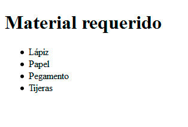
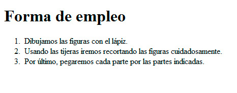
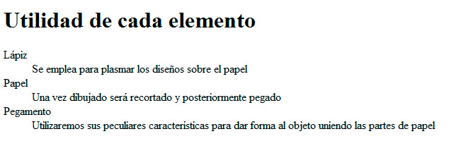

Listas no ordenadas
Este tipo de listas se abren con la etiqueta <ul> y se cierran con su correspondiente </ul>. El ul proviene de unsortered list (lista desordenada, en español).
Para distinguir cada elemento de la lista, emplearemos la etiqueta <li>, con su correspondiente cierre. Así una lista típica quedaría así:
<h1>Material requerido</h1>
<ul>
<li>Lápiz</li>
<li>Papel</li>
<li>Pegamento</li>
<li>Tijeras</li>
</ul>
Al insertarlo en una página web, obtendremos el resultado de la figura:

Cada <li> puede contener todo lo que se nos antoje, desde párrafos completos hasta imágenes, vídeos o cualquier otro elemento.
Listas ordenadas
El segundo tipo es similar al anterior, pero cambiando el <ul> por un <ol>, es decir ordered list (lista ordenada). Así conseguiremos que los puntos se numeren.
<h1>Forma de empleo</h1>
<ol>
<li>Dibujamos las figuras con el lápiz.</li>
<li>Usando las tijeras iremos recortando las figuras cuidadosamente.</li>
<li>Por último, pegaremos cada parte por las partes indicadas.</li>
</ol>
El resultado se muestra en la figura:

Listas de definiciones
El tercer tipo, menos habitual, se utiliza para diseñar listas de términos y descripciones asociadas a ellos. La etiqueta <dl> (definition list) abre y cierra la lista, la etiqueta <dt> (definition term) se usa para especificar el término y <dd> (definition description) para describirlo. Todas ellas acompañadas de sus cierres.
<h1>Utilidad de cada elemento</h1>
<dl><dt>Lápiz</dt>
<dd>Se emplea para plasmar los diseños sobre el papel</dd><dt>Papel</dt>
<dd>Una vez dibujado será recortado y posteriormente pegado</dd><dt>Pegamento</dt>
<dd>Utilizaremos sus peculiares características para dar forma al objeto uniendo las partes de papel</dd></dl>
Al mostrarse en un navegador, las definiciones aparecen desplazadas respecto a los términos, como se recoge en la figura:

Pregunta de Elección Múltiple
|
<dl> (definition list) abre y cierra la lista, la etiqueta <dt>.
| |
|
<ul> abre la lista y <ol> cierra la lista.
| |
|
Hay tres tipos de etiquetas, según el tipo de lista desordenada, ordenada y de definición.
| |
|
Ninguna de las anteriores es correcta.
|